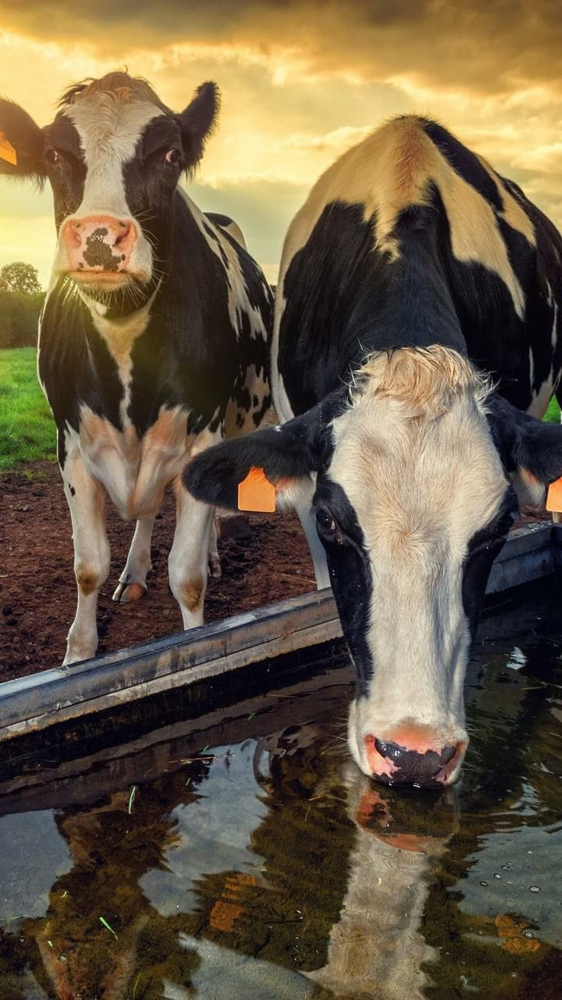

Mr. Nyanzi Edrine
ChairpersonVisionary leader providing executive direction, strategic oversight, and cooperative governance for the SACCO.
Uganda's premier farmers' savings and credit co-operative founded by diaspora professionals dedicated to generational agricultural wealth.
Diaspora Connect Farmers SACCO was established by Ugandan professionals living across the United Kingdom, North America, the Middle East, and Uganda who recognized a historic gap: diaspora remittances were sustaining families, but failing to build lasting sovereign wealth.
By uniting under a legally registered Savings and Credit Co-operative (SACCO), our members pool monthly capital into commercial dairy farmland, high-yielding cattle herds, and modern agro-processing infrastructure across Uganda’s most fertile agricultural corridors.
Every member is a direct co-owner with equal voting rights, audited financial transparency, and titled freehold land security.
Fully compliant with the Co-operative Societies Act of Uganda.
All land is deeded freehold in trust for SACCO shareholders.
Annual surplus dividends and regular commercial dairy milk yields.
The visionary board and founding leadership team guiding Diaspora Connect Farmers SACCO.

Visionary leader providing executive direction, strategic oversight, and cooperative governance for the SACCO.
Leading operational strategy, member alignment, and agricultural development initiatives across our farm networks.
Directing institutional records, statutory compliance, board resolutions, and member correspondence.
Managing financial stewardship, capital allocation, member dividend distribution, and statutory audits.
Championing diaspora member interests, community engagement, and ensuring every member voice is heard.